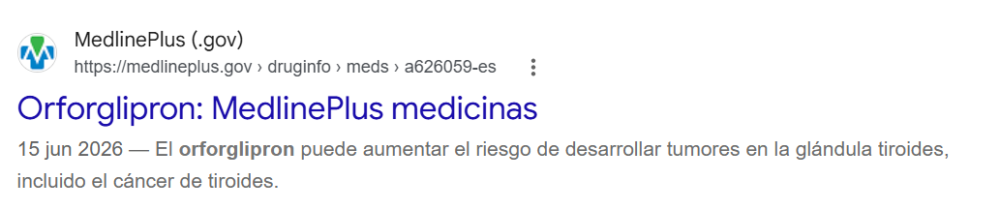

Pasa las páginas de este dossier como si fuera un periódico impreso.
Fig. 1 — Material publicitario de un agonista de GLP-1 aprobado para sobrepeso y obesidad.
GLP-1: LA HORMONA DEL APETITO QUE SE CONVIRTIÓ EN EL FÁRMACO DEL MOMENTO
Semaglutida, orforglipron, liraglutida... nombres que suenan cada vez más en consultorios, farmacias y redes sociales. Antes de opinar sobre ellos, conviene entender qué son y de dónde vienen.
Cada vez que comemos, el intestino libera de forma natural una hormona llamada GLP-1 (péptido similar al glucagón tipo 1). Su trabajo es avisarle al cerebro que ya hay suficiente comida a bordo, frenar el vaciado del estómago y ayudar al páncreas a liberar insulina en el momento adecuado. Es, en pocas palabras, la señal biológica de "ya estoy satisfecho".
Los llamados agonistas de GLP-1 son medicamentos diseñados para imitar esa misma hormona, pero de forma más potente y duradera. Se desarrollaron originalmente para tratar la diabetes tipo 2, porque ayudan a controlar el azúcar en la sangre. Con el tiempo, los médicos notaron un efecto secundario muy llamativo: quienes los usaban perdían peso de manera constante. Ese hallazgo abrió la puerta a su uso —y a su enorme popularidad— como tratamiento para el sobrepeso y la obesidad.
Hoy existen distintas versiones de este tipo de fármaco: algunas se aplican con una inyección semanal, otras ya se toman en pastilla diaria. Todas comparten el mismo principio de fondo —imitar a GLP-1— aunque cada una tiene su propia molécula, su propia forma de administrarse y su propio perfil de estudios clínicos.
En las páginas siguientes: el mito del cáncer de tiroides en roedores, el espejismo estadístico del "20 por ciento", un caso clínico real y una revisión de por qué la variabilidad de los datos importa tanto como el promedio.
EL RATÓN QUE ENCENDIÓ LA ALARMA
Tumores de células C en roedores dispararon advertencias internacionales. La biología humana cuenta otra historia.
En los estudios preclínicos previos a la comercialización de estos fármacos se observó un incremento en tumores de células C de la tiroides —incluido el carcinoma medular— en ratas y ratones. La noticia bastó para encender alarmas regulatorias en todo el mundo.
La explicación molecular resultó más matizada que el titular: roedores como la rata y el ratón poseen una densidad masiva y constitutiva de receptores GLP-1 en sus células C tiroideas. Al sobreestimular ese receptor, las células animales entran en hiperplasia y, con el tiempo, malignizan.
En el ser humano, en cambio, esos receptores están casi ausentes del tejido tiroideo. El hallazgo en roedores se considera así un falso positivo traslacional: la prueba "dio positivo" a malignidad en el modelo animal, pero esa señal no se replica con la misma naturaleza en la biología humana, debido a una diferencia de especie en la densidad de receptores.
"Los seres humanos normales presentan una presencia casi nula de estos receptores en el tejido tiroideo."

Fig. 2 — Advertencia oficial de MedlinePlus (.gov) sobre el riesgo de tumores tiroideos observado con orforglipron.
A pesar del falso positivo traslacional, por máxima precaución el fármaco está contraindicado de forma absoluta en pacientes con antecedente de carcinoma medular de tiroides o Neoplasia Endocrina Múltiple tipo 2 (NEM 2).
EL ESPEJISMO DEL 20 POR CIENTO
Un dato publicitario, leído sin cuidado, puede convertirse en una mentira estadística.
Los gráficos dirigidos a médicos y pacientes repiten una leyenda llamativa: "el 20% de los pacientes logró una pérdida del 20% o más de su peso corporal". Leída sin cuidado, la cifra sugiere que el 80% restante no obtuvo ningún resultado. Es una lectura falsa.
En los ensayos clínicos los resultados se distribuyen en una curva de Gauss. Ese "20% que logró el 20%" es simplemente el grupo de alto rendimiento: los súper-respondedores, en el extremo derecho de la curva.
El resto de la población del estudio también experimentó pérdidas de peso significativas, solo que en escalones menores —reducciones del 5%, 10% o 15%—. La publicidad elige destacar el percentil más alto porque genera más impacto comercial, ocultando así la forma real de la distribución.
Fig. 3 — Distribución esquemática de la respuesta al tratamiento. El área sombreada es apenas la cola derecha de la curva.
El 80% restante sí bajó de peso — solo que en menor magnitud, no en cero.
RETRATO DE UNA PACIENTE: EL AUGE DEL USO COSMÉTICO
Cuando el atajo farmacológico reemplaza el cambio de hábito, el cuerpo pasa la factura.
La paciente presenta un historial de sobrepeso leve, sin cumplir criterios de obesidad clínica, y una marcada preferencia por buscar atajos farmacológicos antes que consolidar cambios estructurales en su vida diaria: ya ha probado topiramato y otras fórmulas.
Sus hábitos alimenticios incluyen desayunos frecuentes en restaurantes comerciales y el consumo diario de cafés de cadena, cargados de jarabes artificiales y azúcares formulados para generar hábito de consumo. No lleva control de sus calorías líquidas.
Bajo semaglutida crónica ha bajado de peso, pero reporta efectos secundarios severos: sarcopenia visible, cabello quebradizo con caída constante, resequedad cutánea extrema y alteraciones anímicas —irritabilidad y apatía—.
Bajó de peso — pero, ¿a costa de qué tejido?
FORO DEL LECTOR: PREGUNTAS PARA EL DEBATE
Tres planteamientos para discutir en sesión de clase.
1. Interpretación MBE. Si un laboratorio comercial afirma que solo una quinta parte de los pacientes logra el resultado máximo, ¿es ético usar ese dato de forma aislada para promocionar el fármaco a personas con sobrepeso leve? Justifiquen con el concepto de variabilidad estadística.
2. Evaluación de falsos positivos. Expliquen por qué la advertencia de cáncer de tiroides en ratas se considera un falso positivo traslacional para humanos. ¿Qué biomarcador ayudaría a monitorear el riesgo si la paciente mostrara temor?
3. La "píldora mágica". La paciente prefiere el fármaco antes que modificar su dieta, y responde a la defensiva ante quien cuestiona su decisión. ¿Qué revela esto del problema sociocultural de buscar una solución empaquetada? ¿Por qué el verdadero costo no es el económico?
Estas tres preguntas se debatirán en la sesión de clase con la dinámica.
LA VARIABILIDAD: LA CIFRA QUE EL PROMEDIO NO TE CUENTA
Dos pacientes pueden compartir el mismo resultado final y, sin embargo, haber vivido tratamientos completamente distintos.
La variabilidad estadística —también llamada dispersión— es la propiedad de los datos de ser diferentes entre sí. En términos sencillos, mide qué tan esparcidos, separados o alejados están los datos respecto a un valor central o promedio. Si no existiera variabilidad, todos los datos de un estudio serían exactamente iguales.
Un ejemplo lo aclara: imaginemos a dos pacientes de 40 años bajo el mismo tratamiento para perder peso. El Paciente A pierde exactamente 1 kg cada semana, de manera constante. El Paciente B una semana pierde 3 kg, la siguiente no pierde nada, y la tercera semana pierde apenas 0.5 kg.
Ambos pacientes podrían terminar el mes con un peso total perdido muy similar —un promedio parecido—, pero los datos del Paciente B tienen mucha más variabilidad: sus resultados oscilan drásticamente semana con semana, mientras que los de A son predecibles.
Dos grupos pueden compartir el mismo promedio de peso o edad y, aun así, tener perfiles completamente distintos.
¿Por qué importa tanto en salud y ciencia? Primero, permite hacer predicciones más seguras: si un fármaco —como los agonistas de GLP-1— tiene baja variabilidad en sus efectos secundarios, el médico puede anticipar con precisión qué le ocurrirá a casi cualquier paciente. Si la variabilidad es alta, el fármaco resulta impredecible: a unos no les hace nada y a otros les provoca efectos severos.
Segundo, evita conclusiones falsas. Dos grupos de personas pueden compartir exactamente el mismo promedio de edad o peso, pero tener perfiles completamente distintos por su dispersión: un grupo homogéneo frente a otro con casos extremos que el promedio, por sí solo, esconde.
CRÉDITOS Y FUENTES
M.C. Adriana Alicia Barrios Rodríguez